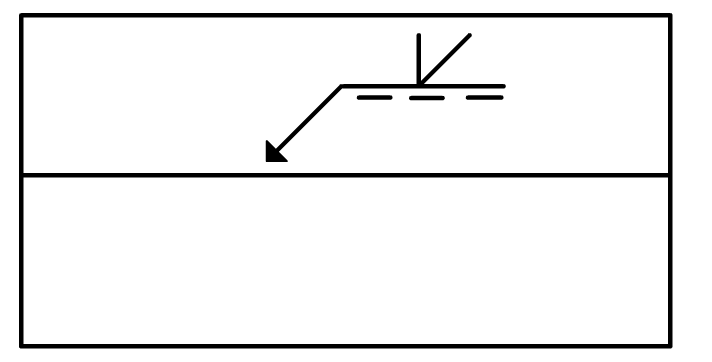

Svets i halv V-fog
Halv V-fog innebär att endast ena plåtkanten är fasad i vinkel.
Hänvisningspilen pekar på den nedre plåten.
Samma regler gäller för snitt


Det finns en symbol för halv V-fog med brant lutande fogyta. Den är avsedd att användas vid pulverbågsvetsning.
Symbolen för halv V-fog med brant lutande fogyta ska alltid användas i kombination med symbolen för rotstöd.
Vilken fogtyp representerar grundsymbolen som pilen pekar på?

Svar:
På vilken sida ska svetsningen ske?

Svar:
Vad kallas den sida som pilen pekar på?
Svar:
← I-fog Halv Y-fog →